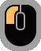
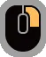
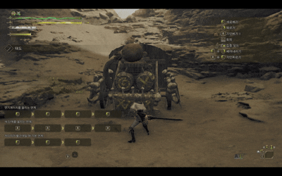
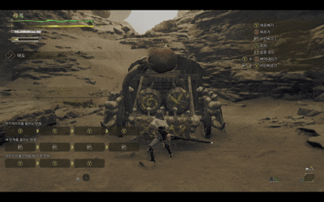
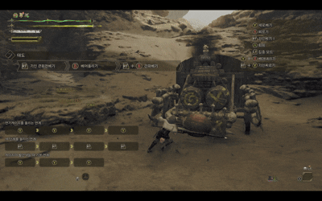

무기 기본적인 스타일 설명

무기의 기본 정의
태도 특성 요약
| 무기 | 상쇄 | 가드 | 전용자원 | 난이도 |
|---|---|---|---|---|
| 태도 | ❌ | ❌ | ✅ | 3 |
태도 기본 조작
| 동작 | PC | Xbox/콘솔 | 설명 |
|---|---|---|---|
| 일반공격 |  | Y |
기본적인 연계 공격을 사용할 수 있습니다. 세로베기 후 Y 버튼을 누르시면 세로베기 II로 이어지며, 세로베기 II 후 Y 버튼을 누르시면 역가사 베기로 파생됩니다. 게이지가 빨간색일 때는 각 기술이 강화됩니다. |
| 찌르기 |  | B | 찌르기 후 B 버튼을 누르시면 베어올리기로 파생됩니다. |
| 기인베기 1 | RT | 연기게이지를 소비하는 참격입니다. 기인베기 I과 기인베기 II는 LS 방향 입력으로 이동하실 수 있습니다. 기인베기 I 후 RT 버튼을 누르시면 기인베기 II, 기인베기 II 후 RT 버튼을 누르시면 기인베기 III, 기인베기 III 후 RT 버튼을 누르시면 기인 큰회전베기로 파생됩니다. 게이지가 빨간색일 때만 기인 큰회전베기 후 RT 버튼을 누르시면 적인선전참으로 파생됩니다. |
|
| 기인모으기 | 길게 | RT 길게 |
모으기 시간이 길수록 더욱 강력한 기인베기로 파생됩니다. 최대로 모으면 기인 큰회전베기를 사용할 수 있으며, 모으는 동안에는 연기게이지도 계속 쌓입니다. 게이지가 빨간색일 때만, 발생 직후에 몸이 움츠러들거나 날아가지 않습니다. |
| 베어내리기 | + | Y + B |
LS 좌측 또는 LS 우측 방향 입력으로 이동하실 수 있습니다. |
| 간파베기 | 콤보 중 + | 콤보 중 RT + B |
콤보 중에 파생이 가능하며, 긴 무적 시간이 발생하는 공격입니다. 연기게이지를 전부 소모하지만, 공격을 회피한 뒤 추가 공격을 적중시키면 연기게이지가 최대로 쌓입니다. 이후 RT 버튼을 누르시면 기인 큰회전베기로 파생됩니다. 연기게이지가 없으면 성능이 감소하며, 게이지가 빨간색일 때는 간파베기 선으로도 파생하실 수 있습니다. |
| 기인찌르기 | + | RT + Y |
게이지 색이 흰색 이상일 때 명중하면, 게이지 색이 한 단계 내려가면서 기인 투구 깨기로 파생하는 기술입니다. 게이지가 빨간색일 때는 기인 투구 깨기가 발동하며, RT 버튼을 누르시면 연기 해방 무쌍베기로 파생됩니다. 기인 투구 깨기 중에는 X 버튼으로 동작을 중단할 수 있습니다. |
| 특수 납도 | 공격 후 + | RT + A | |
| (특수 납도 파생) 앉아발도 베기 | Y | ||
| (특수 납도 파생) 앉아발도 기인베기 | RT |
특수한 납도 액션입니다. 특수 납도 후 Y 버튼을 누르시면 앉아발도 베기로, 특수 납도 후 RT 버튼을 누르시면 앉아발도 기인베기로 파생됩니다. 앉아발도 베기를 적중시키면 연기게이지가 일정 시간 동안 계속해서 회복됩니다. 또한, 몬스터의 공격 타이밍에 맞춰 앉아발도 기인베기를 성공시키면 게이지 색 단계가 올라갑니다. |
|
| 집중 찌르기[무진] | + | LT + RB |
상처에 효과적인 찌르기 공격입니다. 상처나 약점에 적중하면 참격으로 파생되며, 게이지 색 단계가 올라갑니다. 다양한 상처를 파괴한 만큼 색 단계를 올릴 수 있습니다. 또한, 참격은 LS 방향 입력으로 이동할 수 있습니다. |
기인베기
RT
RT
RT
코팅을 쌓는 콤보
게이지를 소모해 코팅을 쌓는 콤보입니다.
코팅은 마지막 기인 큰회전베기로와 앉아발도 기인베기로만 채워지므로 마지막 공격을 잘 맞추는 것이 중요합니다.
기인 큰회전베기가 나가는 콤보
- 기인베기 콤보 마지막
- 간파 이후 간파베기가 맞았을 때
- 기인 모으기를 끝까지 모았을 때
- 집중 약점공격

간파/간파베기
RT
+
B
카운터 기술 1
적의 공격에 맞기 직전에 사용시 게이지를 모두 사용하여 간파를 사용합니다.
간파 성공시 공격을 무시하며 간파베기를 사용합니다.
간파베기를 맞출시 게이지를 모두 회복하며 기인 큰회전베기로 바로 연계 가능합니다.

앉아발도 기인베기
RT
+
A
이후
RT
카운터 기술 2
적의 공격에 맞기 직전에 사용시 무적판정과 함께 코팅을 채웁니다
간파보다 무적시간이 짧고 더욱 정교한 타이밍을 요구합니다.
성공시 다시 특수납도로 연계가 가능합니다.

적인베기
Y
Y
Y
빨간 코팅시 콤보
태도 운영의 핵심은 "피하면서 때린다"입니다.
빨간 코팅시 기본 평타가 적인베기로 전환되고 적인베기 중 간파[선]를 연계하여 몬스터의 공격을 피할 수 있습니다.

투구깨기
RT
+
Y
기인 찌르기 연계
코팅을 소모하여 데미지를 넣는 투구깨기 이후 연기 해방 무쌍베기로 연계가 가능합니다.
코팅을 빠르게 소모하는 운용 특성상 특납-앉아발도 기인베기 콤보를 자주 사용합니다.